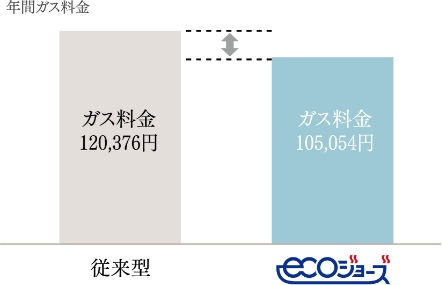

QUALITY
設備仕様
ECOLOGY & ECONOMY
環境と家計への優しさを両立。わが家から始めるSDGs な暮らし。
次世代のために環境を考えること、暮らしのランニングコストを削減すること。
「サングレート姪浜駅南 FIRST&NEXT」は、双方を無理なくスマートに叶えられるマンションを目指しました。

光熱費を抑える受電システムや、テレビの愉しさを広げる光テレビ。
「BBIQ電力」で電気代を削減
安心で快適な暮らしをサポート。「省エネ」で光熱費もおトクに！
マンション一括受電サービス「BBIQ電力」とは、従来の九州電力と各入居者さまとの個別契約から、マンション一棟丸ごとの契約に変えることで、従来に比べて各入居者さまに対して安価な電力を提供するサービスです。

BBIQ光テレビ
光ファイバーのテレビ放送BBIQ光テレビ！
BBIQ光テレビは、光ファイバーを使った多チャンネル放送サービスです。アンテナ不要で天候の影響を受けにくく、基本チャンネルのハイビジョン放送に加えBS4K8K放送も配信。地上波デジタル・BSデジタル・BS4K8K放送をお楽しみいただける「地デジ・BSプラン」、映画、海外ドラマ、スポーツ、韓流、音楽、アニメなど多彩なチャンネル満載のCS放送をお楽しみいただけるプランをご用意してます。
■BS4K8K配信！
次世代の映像規格で現行ハイビジョンを超える超高画質の映像です。4K8Kは従来のテレビ画質と比較し解像度が高いので、立体感が加わりキレイで臨場感のある映像が楽しめます。
■多彩なチャンネルを様々なプランで！
楽しみ方や料金で選べるプランをご用意。BBIQ光テレビで視聴できるチャンネルはプランによって30から87チャンネルと豊富。ハイビジョン画質（HD）チャンネルも充実のラインナップ。
■BSパススルーで家中どこでも2台目以降も楽しめます！
BSデジタル対応テレビや、チューナーがあれば、家中どこでも2台目以降のテレビでBSデジタル放送が楽しめます。
※BBIQ光テレビチューナー（STB）を設置されないテレビのご視聴には、地デジ・BSデジタル・BS4K8Kのチューナーや対応テレビなどが必要です。また、必要に応じて分波器・分配器などのご準備をお願いします。※パススルーⓇはマスプロ電工株式会社の登録商標です。※BBIQ光テレビチューナー（STB）およびBBIQ光テレビ4Kチューナー（STB）は、地デジ・BSプランのお客さまはご利用になれません。
すぐに使える快適なインターネット環境を整え、お得にサポートします。
マンションまるごとBBIQ
まるごとBBIQでネットもお得。住戸内の無線Wi-Fiも標準装備!
■集合住宅向け 光インターネット一括サービス
BBIQは、株式会社QTnetがお届けする、九州・福岡で誕生した光インターネットサービスです。 九州在住のスタッフが九州のお客さまのために細やかなサポートで対応しています。
□マンション共用部の引込から各住戸まで全てが光ファイバーの光配線方式なので、光の通信品
質を落とすことなく快適なインターネットをご利用いただけます。また、各住戸それぞれ回線が異
なるためセキュリティ面も安心。
□光ファイバーの光配線方式のため、次世代規格の「10Gbpsサービス」への対応も可能です。
□QTnetが運用・保守を行うので安心・安全。
BBIQの特長
天候や自然災害にも強い!光ファイバーで安定した通信を実現!!
◆通信速度は、上り下り最大1Gbps!!
◆マンション共用部の引込から各住戸まで全てが光ファイバーの光配線方式のため光の通信品質を落とすことなく、快適なインターネットがご利用いただけます!!
※1.ベストエフォート型のサービスであり、速度を保証するものではありません。※オプションサービスは、別途費用が発生します。
手間なく省エネを実現できる気配り設備が、暮らしのゆとりに直結。
省エネ高効率給湯器「エコジョーズ」
熱をムダなくリサイクルする、高効率のかしこい給湯器。
■熱を再利用して効率アップ
今までは捨てていた排熱（ 高温約200℃）を再利用することで、熱効率が80％から95%にアップ。ガス使用量やCO₂の排出量を抑えることができます。
■燃焼量が減るため、CO₂の排出量が少なくなります
ガスの使用量がこれまでより少なくなるため、排出されるCO₂も減ります。つまりエコジョーズは普段どおりに使うだけで、CO₂排出量の削減につながる、地球にやさしいシステムです。
■ガスの使用量が少なくて済むため、料金も節約
※BBIQ光テレビチューナー（STB）を設置されないテレビのご視聴には、地デジ・BSデジタル・BS4K8Kのチューナーや対応テレビなどが必要です。また、必要に応じて分波器・分配器などのご準備をお願いします。※パススルーⓇはマスプロ電工株式会社の登録商標です。※BBIQ光テレビチューナー（STB）およびBBIQ光テレビ4Kチューナー（STB）は、地デジ・BSプランのお客さまはご利用になれません。
食器洗浄乾燥機
キレイに節水、そして、家族団らんの時間をつくります。
使用水量は手洗いのわずか約1/7。高温約60℃のお湯でパワフルにしっかり除菌洗浄、高温約80℃の温風で除菌乾燥します。図書館（約40ｄB）より静かな運 転音（約36ｄB）なのでテレビの音や食後の団らんを邪魔しません。高性能DCブラシレスモーター搭載。食洗機を使うことで食後の後片付けの時間に家族み んなでゆったりと過ごせます。
■手洗いと食器洗い乾燥機1回の運転経費の目安
（60℃給湯接続・標準コース・約5人分・食器点数40点の場合）
【手洗い】〈食器40点、小物（はし5膳、スプーン・フォーク各5点）はしは1膳＝2点とする/水温約20℃〉合計60点を約10Ｌのお湯（ 約40℃）でつけ置き。食器・小物に使う洗い＆すすぎ水量は約40℃のお湯にして食器：1.35Ｌ/点、小物0.55L/点使用する。洗剤は1回あたり315ml入り213円（税込）（日本電機工業会調べ）を9.6ml使用。 【4～5人コース運転時】食器40点、小物（はし5膳、スプーン・フォーク各5点）はしは1膳＝2点とする/水温約60℃、標準コース（洗い～乾燥）で仕上げた場合。洗剤は1箱詰替え用600g入り380円（税込）（当社調べ）を5g使用。★ランニングコスト 目安単価（税込）●新電力料金目安単価/1kWh＝27円（税込）（家電公取協調べ）●ガス料金（都市ガス）/1m3=166円（税込）（当社調べ）●水道料金132円/m3（税込）、下水道使用料120円/m3（税込）（日本電機工業会調べ）2020年3月現在。 ※税率は8%で計算しています。
光熱費を抑えながら利便性を満喫。持続するエコライフにこだわりました。
魔法びん浴槽
お湯の温度を長時間キープする魔法びん浴槽。
断熱材が浴槽を包んで、快適なお湯の温度を長時間キープする「魔法びん浴槽」を採用しています。4時間たっても湯温の低下は約2.5℃。快適に入浴できる時間が長いので、早い時間帯に入浴するお子様、帰宅が遅くなりがちなご主人など、家族それぞれの入浴時間が違っても快適に入浴ができます。追い焚きも少なくなり、省エネにもつながります。
浴室換気暖房乾燥機
浴室換気暖房乾燥機で365日快適生活指数がさらにアップ。
365日快適生活を送るために、1台4役の浴室換気暖房乾燥機を採用しました。寒い冬はもちろん、梅雨や花粉の季節も大活躍します。また、24時間換気機能付きで、住まい全体に新鮮な空気を供給します。
節水トイレ
お手入れ簡単。約71％の節水が可能な洗浄システム採用の節水トイレ。
「サングレート姪浜駅南ファースト＆ネクスト」では、節水型トイレを採用しています。洗浄使用量が大：4.8リットル、小：3.6リットル、eco小3.4リットルなので、従来品に比べて洗浄水量が半分以下、水道料金もお得です。お得で環境にも優しいトイレです。
複層ガラス
夏涼しく、冬暖かい！複層ガラスを全戸に採用。
2枚の板ガラスの間に空気層のある複層ガラスを採用しました。
室内外の気温差による結露が生じにくいのが特徴です。（一部の窓除く）